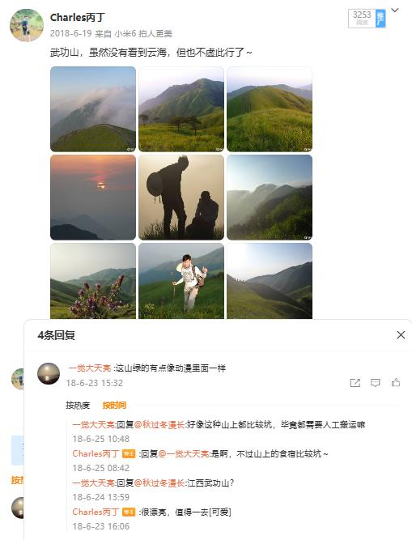
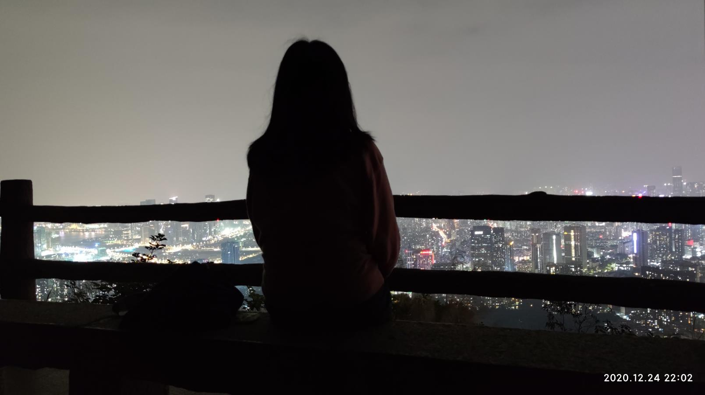
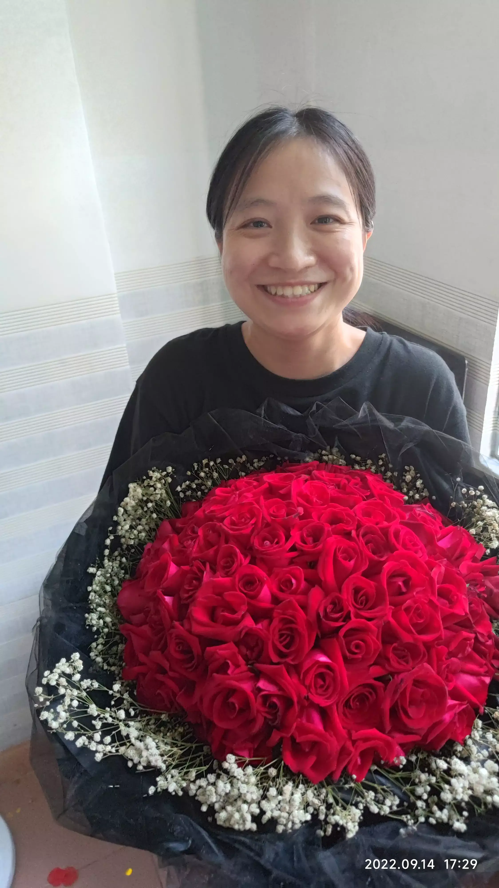
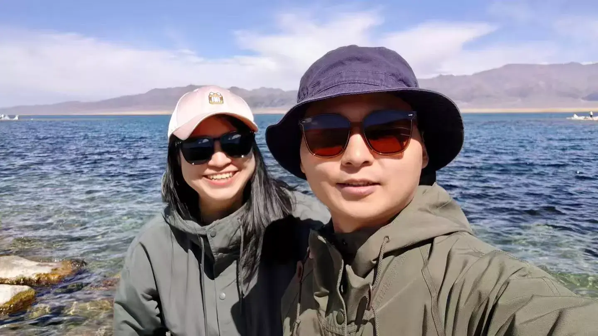

从微博上的惊鸿一瞥，到雪山下的深情相拥。这是一封写给时光的情书，记录我们走过的每一个春夏秋冬。
一个普通的夏日，我们在微博的字里行间相遇，关于绿色的武功山。
我们第一次添加微信，虽然只是有一句没一句的闲聊，但那是两颗心在小心翼翼地在靠近。
跨越了两年的线上时光，我们终于在现实中相见，一起看了电影《金刚川》。
那个夜晚，我终于鼓足了勇气用文字向你袒露了心迹。
那个夜晚，紧张到不行，虽然戒指不太合适，但也看到了你眼中的泪光。那一刻，我觉得自己是世界上最幸福的人。
这一天，你是最美的新娘。我们在圣洁的雪山下许下誓言，交换了戒指。这不仅是仪式，更是灵魂的合二为一，是“无论贫穷富贵”的庄严承诺。
两张红底照片，两本红色的证书。这不仅是法律的认证，更是我们爱情的官方文档。从此，柴米油盐，锅碗瓢盆，我们正式成为了彼此生命中最亲密的家人。
时光会继续流淌，我们的故事未完待续。也许容颜会老去，也许激情会沉淀，但我知道，只要牵着你的手，每一个明天都值得期待。愿我们年年岁岁，岁岁年年，都能在这一天，重温此刻的感动。
